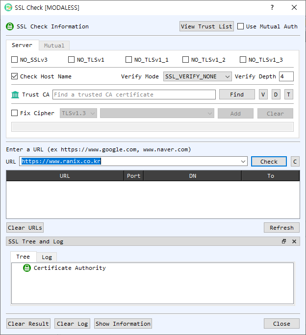

SSL Check Dialog Guide
The SSL Check dialog connects to an HTTPS server and reports TLS, certificate, and trust information. It can also test servers that require mutual TLS client authentication.

Figure 1. SSL Check dialog on the Server tab. Enter a server URL and select Check to test the TLS connection and certificate chain.
Screen Areas
- Server / Mutual tabs — Configure ordinary server checks on Server. Use Mutual to configure a client certificate and private key for mutual TLS.
- View Trust List / Use Mutual Auth — Open CertMan's trusted root list or enable client-certificate authentication.
- Protocol options — Check
NO_SSLv3,NO_TLSv1,NO_TLSv1_1,NO_TLSv1_2, andNO_TLSv1_3to disable the corresponding protocol versions for the test connection. - Check Host Name — Enable hostname verification so the server certificate is checked against the requested host.
- Verify Mode / Verify Depth — Set the TLS certificate verification mode and maximum chain depth. The displayed default depth is 4.
- Trust CA — Optionally select a trusted CA certificate file with Find. V, D, and T view, decode, and identify the selected file.
- Fix Cipher — Enable a restricted cipher configuration, choose a TLS version and cipher, and select Add. Clear removes the configured cipher selection.
- URL / Check — Enter a hostname or URL and select Check. If no scheme is supplied, the dialog assumes
https://; the default port is 443. C clears the URL field. - Results table — Lists tested URL, port, certificate distinguished name, and expiry. Select or right-click a row for available certificate actions, including viewing, decoding, or checking it again.
- Clear URLs / Refresh — Clear the current result list or rerun checks for the saved URLs.
- SSL Tree and Log — Tree displays certificate authority/path information; Log shows connection and verification details. Clear Result clears results; Clear Log clears the log.
- Show Information / Close — Opens the selected server's SSL information window or closes the dialog.
Check an HTTPS Server
- On the Server tab, configure protocol versions, hostname checking, verification mode, and verification depth as needed.
- Optionally select a Trust CA certificate or use the configured trust list.
- Enter a URL such as
https://example.com, or a hostname such asexample.com. - Select Check. Review the result table, certificate tree, and log for connection and chain status.
- Select Show Information to inspect details for the selected result. Use Refresh to check saved URLs again.
Check a Mutual TLS Server
- Enable Use Mutual Auth and open the Mutual tab.
- Provide the client CA certificate and select a client certificate/private-key pair, either from CertMan or with the individual certificate and private-key file controls.
- If the private key is encrypted, enable Encrypted PrivateKey and enter its password.
- Return to the server check and select Check. The client credentials are presented during the TLS handshake.
Notes
- The URL check tests the live server connection using the current network, TLS, hostname, and trust settings. A server's configuration and certificate status can change over time.
- Disabling protocol versions or restricting ciphers changes the handshake options and may prevent connection to servers that do not support the remaining choices.
- Mutual TLS requires a client certificate and its matching private key. Keep private-key files and passwords confidential.
- A successful TLS connection and certificate verification are distinct from application-level security or the server's identity beyond the selected verification checks.